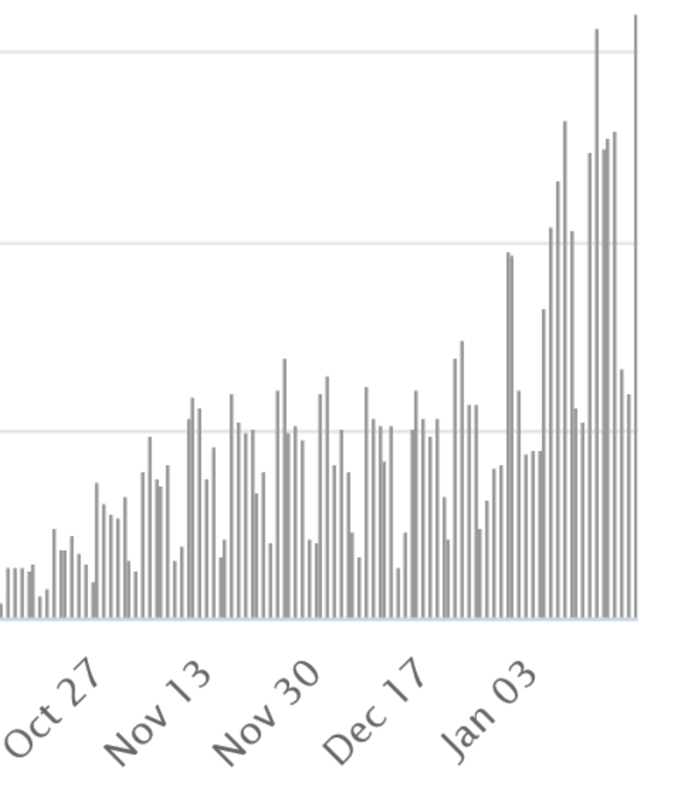
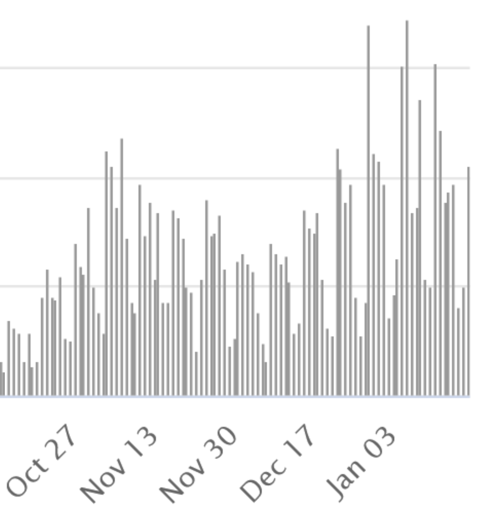
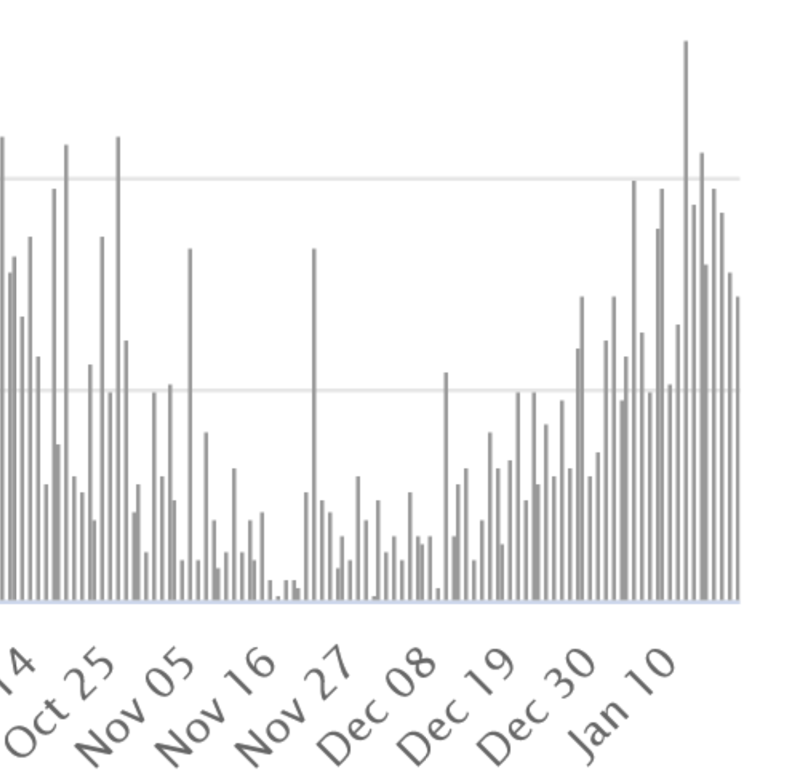
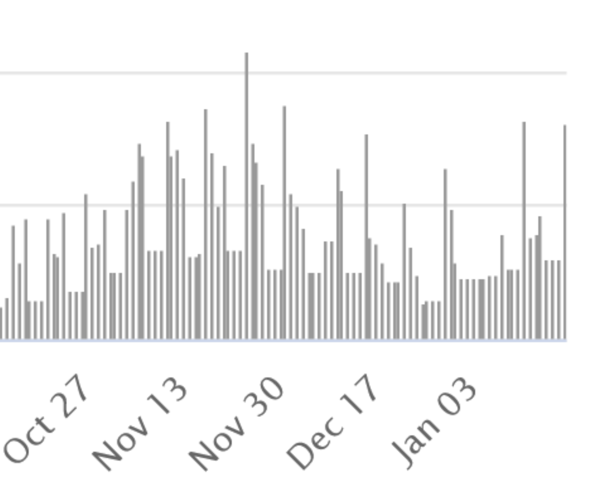

I am all for effective vaccines and have been impressed with how fast vaccines have been developed against covid, but I never expected them to be the wonder weapons some promised them to be. After all, the yearly new vaccines against the flu never eradicated the flu but reduced their death toll, which is of course still a good thing but not a 'final victory'. Gradually, the limitations of the covid-vaccines and the negative side-effects are starting to dawn on many.
To help the reader test herself on whether the vaccines are an immediate game-changer, find below the graphs on covid-deaths for four countries over the last three months. Two of these countries are in the high-vaccination group of countries with large roll-outs among the vulnerable starting before 2021, whilst two other countries are in the lagging group. All four countries participate in Eurovision. Try and put these countries into the right 'vaccination order' without cheating ...




While we are at it, have a guess which of these countries introduced new lockdowns and when, or which ones changed regulations on mask wearing and when? If such policies have the clear effects politicians claim for them when they announce them, it should be easy to work out what policies were implemented and when from such graphs, even allowing for whatever lag you think is appropriate.
Think of what these limitations mean for what will inevitably happen if Australia opens up fully again. A stark choice awaits....
on studies of lockdowns Andrew Gelman right on queue. comments are good too.
Particularly the comment by Peter Dorman.
Since the vaccines take a few weeks to get to full efficacy after you have had them twice across a month and most countries haven't even started, it isn't clear to me that it is useful to look at the results at this time. Even Israel, where they have been able to do things quickly and people seem sensible enough to want them, hasn't given people the two doses they need to get high efficacy with the current vaccines. Things like death rates would also accumulate in many places like the UK even if 100% of the population was vaccinated tomorrow because you have a large group of people already with the virus and symptoms, some of whom will die and this is quite a drawn out process. So this reminds me of the now falsified predictions of death rates in Euroland and other places that many people made before this Winter (or Summer here). Waiting a month or two more clearly changed the story.
To me the biggest current limitation is there is no vaccine for children, so there is no hope of herd immunity as children will be running around spreading it to each other and anyone else not vaccinated -- but at an individual level they are clearly worth having. Ethically, it will be interesting to see if countries are willing to give children a vaccine even if one gets through testing, because if children below a certain age show no symptoms or only very minor ones, the vaccine is clearly of no benefit to them, and so at the individual level it wouldn't pass the harm/benefit trade-off.
Oh for goodness sake, Paul. Of course there will at this early stage be a large positve correlation between national rates of vaccination and incidence of coronavirus - because those countries with a high incidence of coronavirus were the most desperate to start immunising.
Pretty elementary, mate.
Here are some promising numbers from Israel relating to vaccination of those 65+ in the period Dec 19-24 'showing an ~2/3 reduction in cases ~21 days after the first dose of the Pfizer vaccine'. It will be interesting to see the final real world numbers.
https://twitter.com/segal_eran/status/1352696743570374656/photo/1
Speaking of promising numbers, the ABS provisional mortality data is showing a 10.0% reduction in the age standardised mortality rate for the period 3 March to 27 October 2020 as compared to the same period for the average of the years 2015 to 2019. (See sheet Table 2.1 in workbook Provisional Mortality Statistics Jan- Oct 2020 with SDRs https://www.abs.gov.au/statistics/health/causes-death/provisional-mortality-statistics/latest-release). These numbers represent at least a 1 year improvement in Life Expectancy if they are maintained for the full year. I wonder how long it will take for these very good numbers to percolate through to improved subjective well-being numbers.
[4 days on]
Above of course the predictable 'just wait, its coming' mantra on the effects of vaccines, just as we had for lockdowns and other measures. I am glad a few commenters put these on the record because we will then be able to compare again in a week's time and have a clearer line-up of expectations and outcomes. I personally, btw, do expect some clear death-reduction effect of vaccines, but not so dramatic that it would be all that obvious. Its not obvious now, 4 days later.
I do note no commenter tried to guess when lockdowns or mask policies were introduced/changed in the countries above, which is for the better because its a fairly hopeless task.
you do realise we did not have a flu season because of social distancing and working from home
Actually its more interesting than just the things you mentioned. Flu and other respiratory disease infections have reduced dramatically because of social distancing and working from home, but the elimination of flu and zero flu deaths for the 5 months to October is partly due to the effectiveness of alcohol in santisers in knocking off the flu virus. And heart disease and stroke deaths are also down significantly for reasons that are not clear. The reduction has mostly been in the winter peak of cardiovascular deaths, so its probable that the reduction in respiratory infections has reduced the chance of dying from cardiovascular disease. We won't know for sure until we get the multiple cause of death data from the ABS.
It's a biased question, because you're saying "predict this in a myriad of different factors, some of which, like the change of seasons, clearly have massive effects". How about: are there any cases where coronavirus cases didn't drop after a population was strictly locked down for 10 weeks? I can't think of any. That's not necessarily entirely obvious, because one can imagine spreading via water contamination, air-conditioning etc. Of course, one wishes you could predict the first, in which case governments wanting to reduce coronavirus may in some cases need to do very little when instead they lock people up (so people should really think about things like changes of season). Aternatively going in hard early rather than waiting may be less costly as, say, Melbourne vs. London appeared to show.
As for predicting the effect of the vaccinations, it's very difficult at the population level because you need predict to how very inefficient governments work (good luck), social characteristics of the population, age of the population, the ability to get vaccinations etc. . All of these differ across countries and in many places states in countries.
Of course, I'm willing to predict that of those that get vaccinated, the results will be more less what the test trials show (excluding Chinese vaccines where I wouldn't believe the results). That's of course obvious.
However, I'm also willing to predict that because the virus is very contagious compared to many others, the proportion of people that get it and the effects they have after controlling for demographics will be very similar. Thus, I don't think we'll get herd immunity in many places especially because, as noted above, there are going to be lots of children spreading it. This is why I think some governments are now trying to temper people's expectations -- not just to try and get vaccination rates high.
"predict this in a myriad of different factors, some of which, like the change of seasons, clearly have massive effects"
yes, that was indeed one of the points I was making. Glad to see it was understood! It is important to note those things because governments have been portraying vaccines as the wonder weapon.
And yes, as I say in the post, I too expect vaccines to make some difference, though the reports are already coming in how vaccines might be less effective than hoped for.
Of course, Paul Frijters... all that hard sell from a notorious sector, "ethical" pharma".
The only thing that would have surprised me would have been if there HADNT been the series of production and distribution stuff ups.
They had at least a small window of opportunity for remedying faults before this rollout began.
[note to self]
interesting to re-read this post 7 months later. We now know a lot more. On the whole, my judgment, informed mainly by the excess death graphs from euromomo, is that vaccines have helped reduce covid-deaths substantially, with hard to read effects in the group up to 44 years where negative side-effects trade off against covid-effects (both are very poorly measured). The essential disappearance of large excess deaths after February in all the euromomo countries makes it very unlikely that it wasn't vaccines which were being rolled out across the most vulnerable first: there would have had to be some large flare-up somewhere among the elderly vulnerable unless something new prevented that and vaccines are the obvious 'something new'. Net benefit of vaccines in terms of saved/destroyed years of life is thus undoubtedly positive, though unclear whether vaccines would pass a conventional social cost-effectiveness threshold for anyone not old and vulnerable once we take into account the cost of manufacture and distribution.
On boosters and such, matters are less clear because the whole business of 'waning immunity' is not so clear yet. Even the WHO recommended against boosters today, saying they do so little that it would be more useful to send the vaccines to poor countries (though the social case for that is not all that clear given the very low covid death counts in poor countries and the costs of actually using 'spare vaccines' there).
Other interesting bits we have learned is that vaccines have different success against different variants, but still seem to reduce mortality rates among the elderly for any variant (alfa or delta!). Also interestingly, it is now increasingly likely that vaccines neither protect against delta-variant infection or giving it to others, though they still do help against serious covid-illness. That's a bit hard to understand for most people, but an easy way to depict that is to imagine that there are multiple stages to getting infected and getting seriously sick from covid, with the vaccines only having use at higher stages but not the early ones where infection and passing-on mainly occur. That finding, if corroborated, does btw have a huge impact for the arguments around shielding and externalities: if they dont help with (delta) infection or passing-on, the expected externality does not differ by whether someone is vaccinated, meaning that the case for using vaccination status as a decider for whether someone should be allowed something (entry to a venue or travel) disappears. The case was weak anyway from a longer-term perspective and a relative impact perspective, but now also from an externality perspective. That will take a while to sink in too, and we're likely to see strange 'but wait' arguments to avoid its implications for the whole business of trying to force vaccinations or vaccination-privileges onto the population.
On measurement, it is now increasingly clear that the reported covid-deaths in cult countries in Europe are not excess deaths and thus a statistical artefact of large-scale testing. That will probably take quite a while to sink in in Oz as those supposed ongoing covid-deaths will be an important input into the opening-up scenarios where they are depicted as evidence for the price of opening up. It will be easy for those benefiting from the ongoing madness to muddy the waters on this point for several months at least, which they will surely do.
The muddied statistics on actual covid-deaths in Europe are also very likely the cause of the totally weird graphs in the post: the measurement bias is so large and particular to the cult countries that they make normal statistical inference on what affect what impossible. Only large research groups that have the resources to themselves re-do most of the covid-deaths stats country-by-country and period-by-period have any hope of really sorting this out, though of course they would be immediately attacked by those with skin in the game based on those biased measurements.
On optimal vaccinations and such Sweden has once again proven the leading light, with vaccinations around 44% (the vulnerable and the voluntary), practically zero measured covid-deaths and negative excess deaths (they probably now have less excess deaths since jan 2020 than Australia, though the Oz numbers are coming in with a long delay).
On masks, etc., there is not a huge amount of new information, apart from that discussed in more recent posts.
Thanks for this Paul
Most of it was simple and informative.
You just couldn't help calling those who disagree with you cultists. A great pity for you and for all of us.
It doesn't really matter what you call them, so why not call them something neutral and descriptive?
Who does that kind of thing? Now let me think. People who don't value debate do it. Governments do it. CEOs do it. Propaganda outfits do it at every turn — from 'running dog capitalist lackeys' to 'communist or Islamic extremists'. Oh and cultists. Cultists do it.
thanks Nick.
Well it was a note to self on a post of 7 months ago so I feel perfectly entitled to use the language most immediately clear to myself. Since I have now used the same trichotomy (minimalists, pragmatists, cults) in various publications, I know immediately which countries in Europe I have in mind when I simply refer to the cult ones. 'More than 70 on that particular Blavatnik index for at least 60 days in 2020 ' is so much more of a mouthful.
I saw some pictures today of the army enforcing the latest Sydney lockdowns. I see state premiers are outbidding themselves in being tougher than the others. And Tasmania seems to be thinking of a preemptive lockdown even in the absence of actual cases. 'Cult' is a rather apt description for this behaviour, I think.
Btw, I read the podcast on Orwell in that magazine you posted. Nice. I have little doubt as to what Orwell would have made of Australia right now, and particularly Victoria. Can you imagine him saying it was all sensible and proportionate? I learned from that essay Orwell hated the use of euphemisms to hide bad behaviour. Quite my motivation too. Big Brother. Cult. Gotta call them as you see them in these circumstances.
"social cost-effectiveness threshold for anyone not old and vulnerable once we take into account the cost of manufacture and distribution."
I imagine that is answered by: "though they still do help against serious covid-illness" by stopping hospitals overflow, stopping people losing their jobs and collecting welfare when they are sick for months, stopping people having to care for those people etc. . I was also under the impression that the cost of manufacture and distribution can be done pretty cheaply (or certainly could be once tablet forms etc. come online).
I also think you are confusing and with or here in "old and vulnerable", given serious illnesses seem to have a different distribution to deaths across the age range. Indeed, I'm not sure I'd use old in any case unless you want 45 as old.
Thanks Paul,
In the heat the word generated, I missed that you were referring to countries not people, so that is a distinction I accept. I still think it's sad you don't adopt language designed to distance yourself from how sure you are that you're right. But I also accept your right to throw away the mantle of objective advisor and person trying to figure stuff out and adopt the partisan and bullying vocabulary of the activist.
And I know, you see the other side as bullying (and you're dead right to — that's how we've run our democracies since WWI). It's part of my attempt to gain some distance from it all that, as part of an attempt at self-command and at persuading the persuadable, I usually try to adopt non-disparaging terms for those I disagree with. But I expect it wouldn’t be hard to find me violating my principle. :)
On your point about civil liberties, I agree with it strongly, but see the problem as elsewhere. I'll try to elaborate on this in a longer post if I get the time, but as I see it there's a two stage issue here. I have no problem with democracies imposing restrictions on civil liberties — even draconian ones — providing they're subject to strong safeguards. (Particularly in time of war). Of course then the question turns to what sort of safeguards.
That the COVID measures have not been so subject I completely agree. The thing is, this is a pretty new question for most people. I've actually shown some attention to this question for at least four decades. I say that because I can identify when I first did something about it. I wrote a private members bill for Senator John Button in 1981 when he was in opposition to introduce due process and the coming before a judge wherever parliamentary privilege was used to penalise someone (or perhaps just to jail them).
It has always amazed me that while we go on about our precious liberties, our constitution (I mean the fabric of our constitution not just the Australian Constitution, 1901) has precious little in the way of safeguards and no-one shows much interest in them. I'm not really talking about bills of rights, which come with their own ideological baggage. I'm talking of simply thinking what mechanisms would be the first to be used by authoritarians trying to take away our liberties.
Parliamentary privilege is an obvious example, but so are so many other things — for instance the government's control over prosecutions. But we don't see much agitation — from libertarians or anyone much about any of this.
Anyway, I'm now going to repurpose this and post it as a separate post. So, feel free to offer me your thoughts on the latter part of this comment on that post.
Elimination: Even New Zealand , middle of nowhere,has failed. How much is it ok to pay to delay the inevitable?
Sweden has not become the cautionary tale many predicted
Telegraph UK
Millions of people across the world have been confined to their homes. But for some 10 million Swedes, the 18 months since the first local COVID-19 case was registered last February have been largely unremarkable.
Two-thirds of people are not worried about the consequences of the pandemic for them and their family, according to the most recent opinion survey carried out in mid-June.
There is broad support for the government’s choices. Just a quarter felt the authorities should have given public health greater priority over the economy. Anders Tegnell, the state epidemiologist who was the architect of Sweden’s strategy, was last week voted “most important Swede of the year” by the readers of Sweden’s leading supermarket magazine.
That is not to say the virus has not taken its toll - nearly 15,000 people have died, a rate of around 1,450 per million of population. But that death rate is lower than the average for the EU as a whole (1,684), and well below those of France, Spain, Italy and Britain.
Some now concede Sweden has not become the cautionary tale many predicted.
“Many times I would have thought that the situation would have gone a different way, but it worked for Sweden,” said Samir Bhatt, professor of Public Health at the University of Copenhagen, and one of the team at Imperial College who pushed the UK’s lockdown strategy.
“They achieved infection control; they managed to keep infections relatively low, and they didn’t have any health care collapse.”
The real benefits of Sweden’s radical policy, however, can be seen in the economy, the psychological impact and in schools.
At the end of the first wave last year, the IMF predicted that Sweden’s economy would contract by 7 per cent in 2020. The actual figure of 2.8 per cent was significantly lower than the EU average of 6 per cent and the UK’s 9.8 per cent. Sweden’s economy has also bounced back faster than others in Europe and is estimated to grow by 4.6 per cent this year.
The government avoided splashing out on costly financial-support packages, spending just $22 billion (£16 billion) - 4.2 per cent of its GDP - on wage subsidies and other measures.
As a result, in 2020, Sweden recorded the second smallest budget deficit in the EU after Denmark, and its national debt has come through the crisis almost unscathed.
“The public finances have been hit relatively lightly,” Urban Hansson Brusewitz, of Sweden’s National Institute of Economic Research.
The psychological toll of the pandemic also appears to have been less dramatic, with a continued decline in those seeking treatment for anxiety and depression, particularly among children and young adults.
A large part of this is likely to be down to the decision to keep primary and lower secondary schools open. Even in upper secondary schools, only children who test positive or have been formally contact-traced are asked to stay home. Entire schools and classes were quarantined very rarely and only in exceptional circumstances if advised by a local infectious disease doctor. That is a marked contrast to the UK, where as many as a million children were sent home from school during the “pingdemic”.
“We are very happy that we kept our schools open. I think that is very important,” explained Sara Byfors at the Public Health Agency.
An analysis of national grades published last month found no evidence that the pandemic had negatively affected children’s educational attainment.
Note to Nick:
your twitter thread of September 11th 2021, 'The Sociopathic style in American politics" is, IMO, a good example of cult-like, rhinoceros behaviour. It approvingly quotes a set of statements wherein the substantive argument is that the American Republicans are sociopathic because they are insisting on the right to infect others by refusing vaccinations (eg in the first line of that 7-part series it starts with "This is their position. People should be free to acquire and transmit to others a deadly and extremely communicable virus, even though this catastrophe could be avoided completely if people took a free and safe vaccine.", a thought repeated in some of the other lines, equated with all kinds of other ills laid solely at the feet of the Republicans rather than both parties (like the oligarchy)).
Now, unless you meant that thread as deeply sardonic, I have to count it as a series you rather agree with.
Yet, just 3 weeks ago you agreed when you were told vaccinations do not prevent (or even reduce) transmission, ie in the note-to-self of mine that you reacted to above. So at that point you knew there was no case to force vaccinations onto others. There are now plenty of studies saying the same, particularly for the delta variant.
Three weeks later you seem to have entirely forgotten this point and I find you running with the herd.
To be clear, there is plenty of sociopathic behaviour in American politics all round, which is partly why I dont take sides in their politics, but on this occasion the sociopathic behaviour is from the side you approvingly quote.
It is very odd because at other moments you quote people (Polanyi) who lived through the kind of authoritarian nightmare you are implicitly supporting, regurgitating their quotes on how one should not fall into such a trap.